Domov našli
396 koček už má svého člověka.
Tolik našich svěřenců eviduje Pesweb.cz jako „našel domov“ (říjen 2026). Všem novým páníčkům děkujeme a přejeme mnoho radostných chvil.


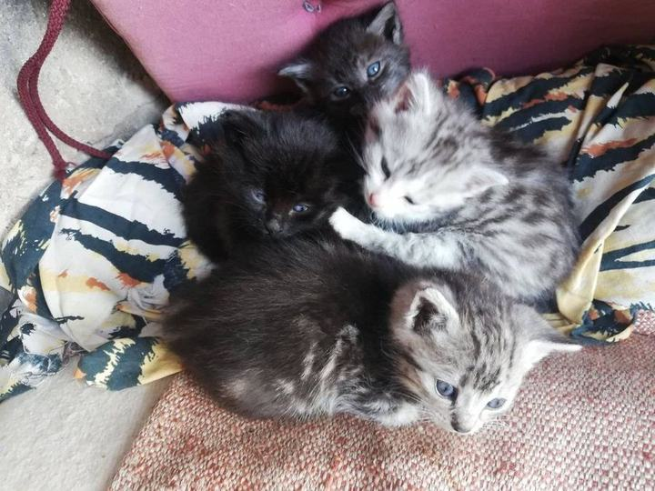
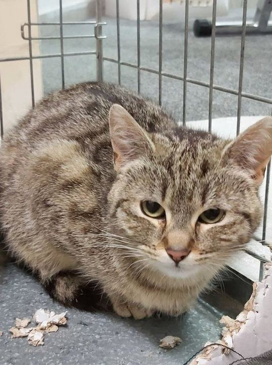
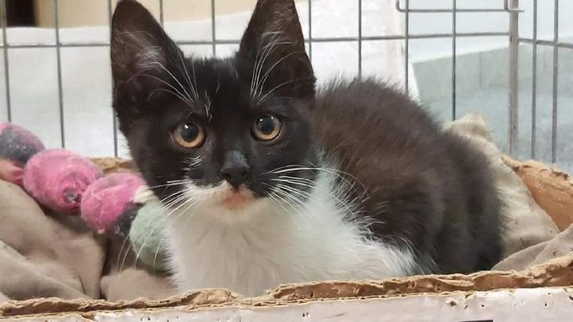
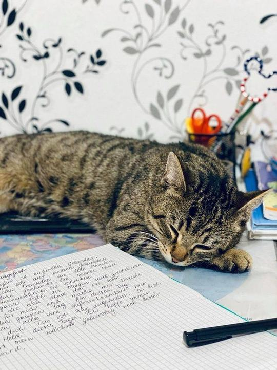
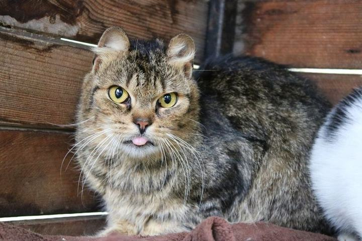
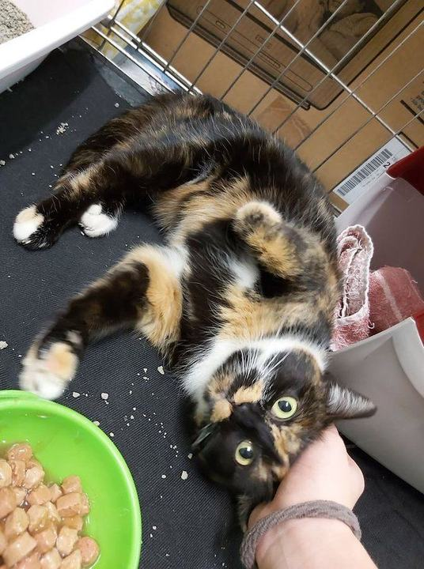
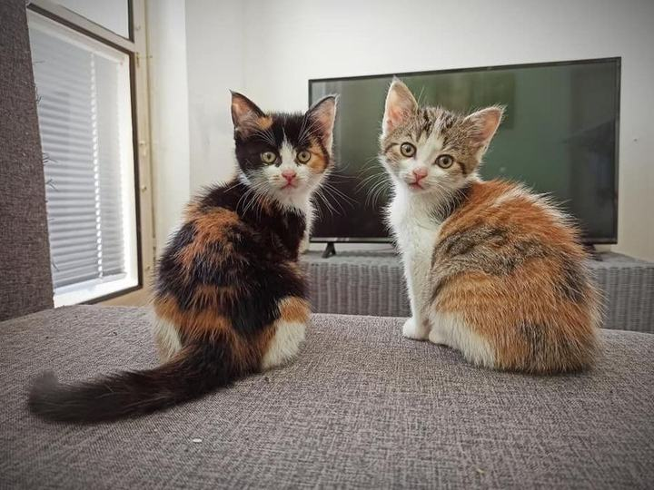
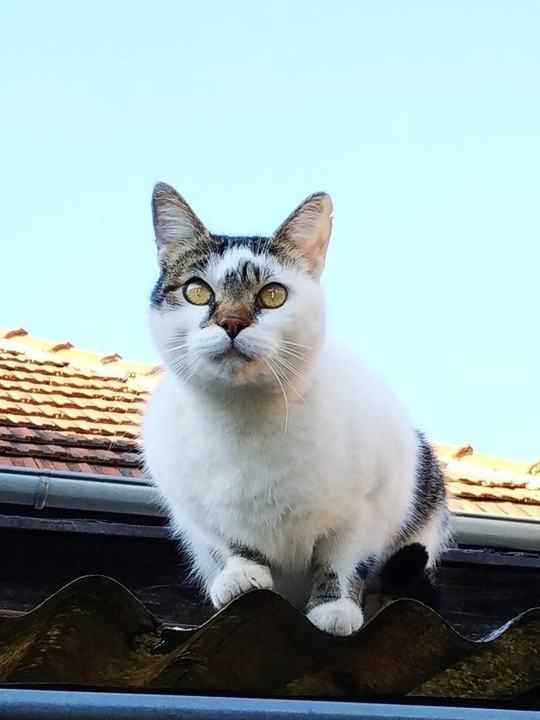
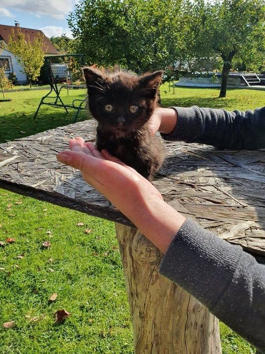
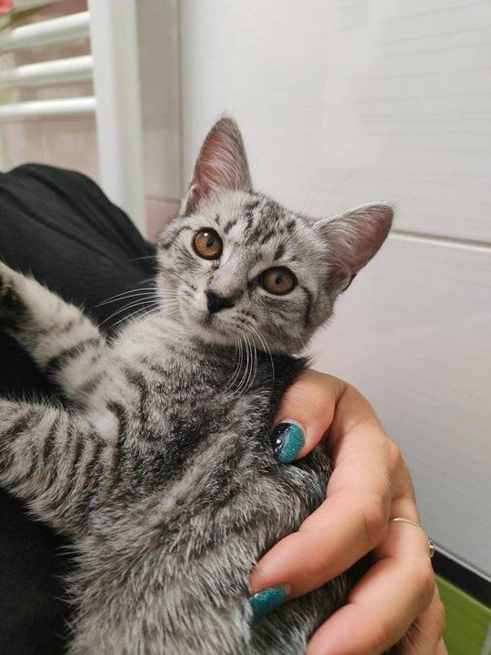
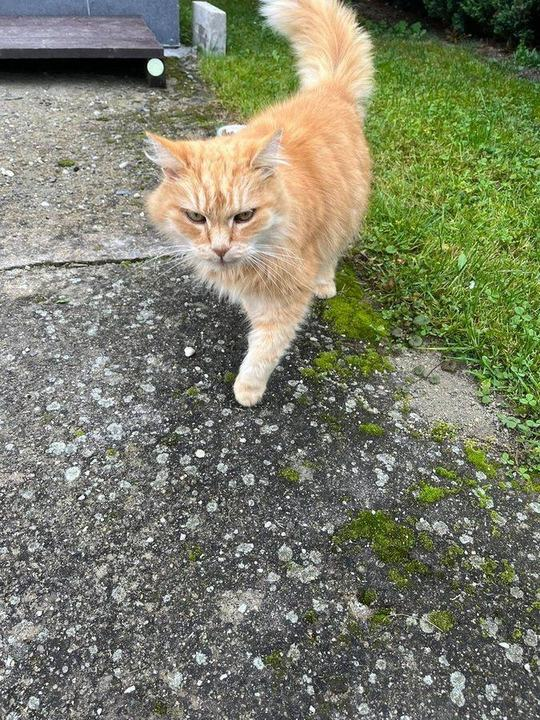
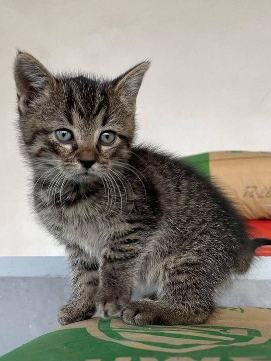
Adoptovali jste od nás?
Pošlete nám fotku z nového domova.
Nic nás nepotěší víc. A fotky spokojených koček pomáhají dalším kočkám najít domov, protože lidé vidí, že to funguje.
Nejnovější šťastné konce
Kdo odešel domů naposledy
Další kočky ještě čekají.
Uvolněné místo v depozitu hned obsadí další kočka z ulice. Možná bude ta příští právě vaše.